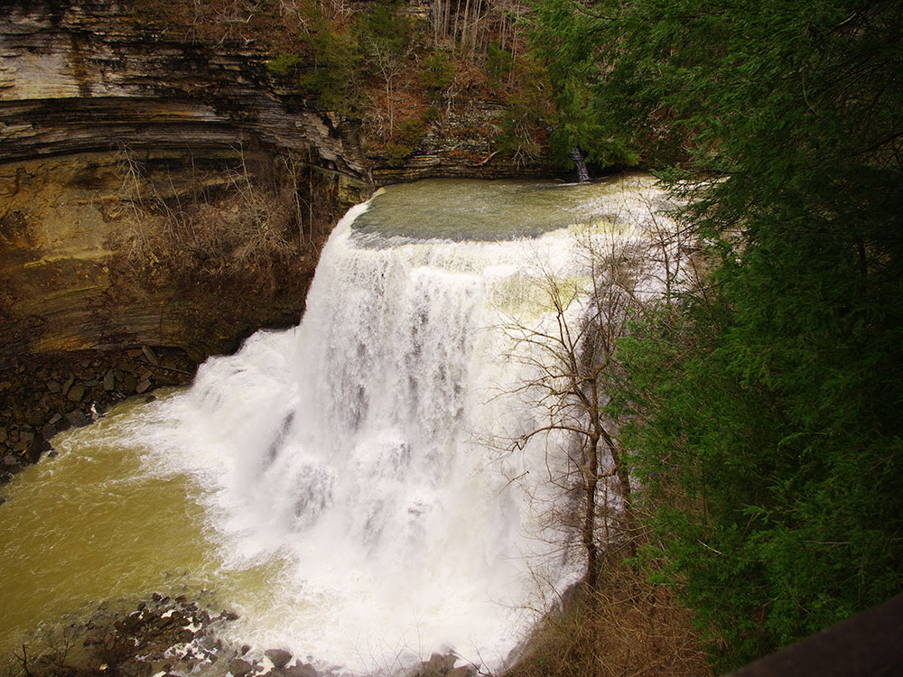
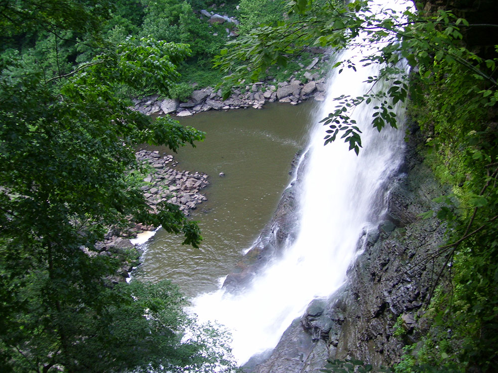
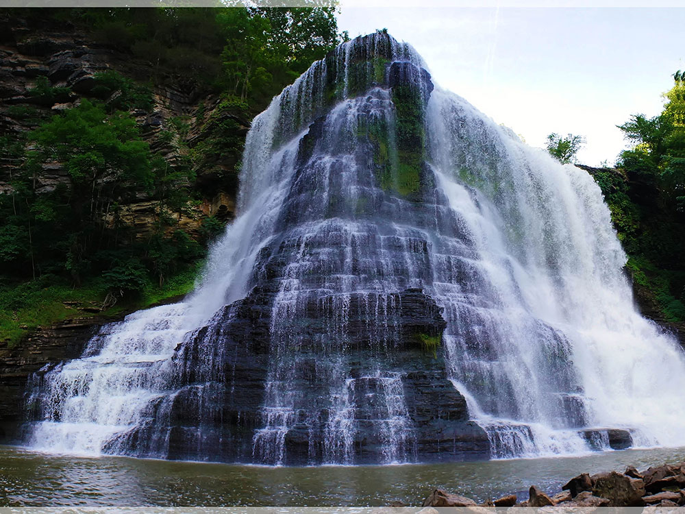
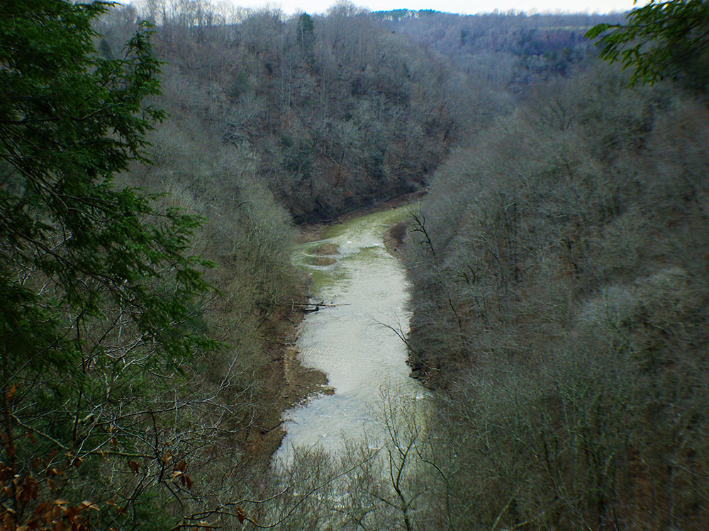

Park situated around a steep gorge in which the Falling Water River drops 250 feet (76 m) in elevation in less than a mile, culminating in a 136-foot (41 m) cataract waterfall
General Information
August 16–October 31: 8:00am to 6:00pm
November 1–Second Sunday in March: 8:00am to 4:00pm
Second Saturday in March–April 30: 8:00am to 6:00pm
No admission fee required
Summer: Full access to trails and lush scenery
Fall: Excellent foliage and comfortable hiking temperatures
Winter: Fewer crowds and enhanced waterfall views through leaf-off forests
How to Get There
From Cookeville (15 mi): Take TN-135 N from Cookeville, continue approximately 15 miles toward Sparta, then follow signs to Burgess Falls State Park and turn onto Burgess Falls Drive to reach the park entrance.
Overview
Burgess Falls State Park is a Tennessee state park and state natural area on the Falling Water River, on the border of Putnam and White counties on the Highland Rim. The river drops about 250 feet in less than a mile through a steep limestone gorge, forming a series of cascades that culminate in the 136-foot Burgess Falls, one of the tallest waterfalls in the state. The land is protected as a state natural area to preserve the gorge, the waterfalls and the forest around them. Visitors come for the short, rewarding hike to four waterfalls, the dramatic overlook of the main falls, and the chance to see a powerful waterfall without a long trek.
Access
The park is on Burgess Falls Drive just off State Route 135, roughly halfway between Cookeville and Sparta. Cookeville is about 15 miles away, Nashville is about an hour and a half by car, and Knoxville is roughly two hours. There is no public transportation to the park, so most visitors arrive by car. The parking area fills quickly on weekends, especially in spring and summer, and the park may limit entry when it is full. The main trail begins near the parking area and leads to the waterfalls overlook, and the stairway to the base of the falls may be closed for safety.
Seasons
Spring is the best time to see Burgess Falls at full volume, when rains keep the Falling Water River high and wildflowers bloom along the trails. Summer is warm and humid, with crowds on weekends, and the falls can run lower during dry spells. Fall brings comfortable hiking weather and colorful foliage along the gorge. Winter is quiet, with leafless trees offering clear views of the falls and, in cold snaps, ice along the rocks. Trails can be slippery after rain and in freezing weather, and the park may close sections for flooding or ice.
Geography
The Falling Water River rises near the base of the Cumberland Plateau in eastern Putnam County and winds its way across the Highland Rim to its mouth along the Center Hill Lake impoundment of the Caney Fork, which is located in an area where the Highland Rim drops off into the Central Basin. The Burgess Falls State Natural Area comprises the section of the river just above its mouth, where the river drops from roughly 900 feet (270 m) atop the Highland Rim to just over 600 feet (180 m) at Center Hill Lake.
Over a long period of time, the Falling Water River's rapids have cut a deep gorge just above its mouth. The river drops to the Central Basin in a series of cascades and waterfalls, each gaining in size and intensity as the river approaches Center Hill Lake. At the Falling Water Cascades, located just downstream from the old Burgess Falls Dam, the river gradually spills over a 10-foot (3.0 m) embankment of rocks. Almost immediately downstream from the Cascades, the river drops another 30 feet (9.1 m) at Little Falls. Beyond Little Falls, where the river briefly bends to the north, is an 80-foot (24 m) cascade known as Middle Falls. Downstream from Middle Falls, where the river bends westward again, is the 136-foot (41 m) Burgess Falls. The distance between Falling Water Cascades and Burgess Falls is less than a mile. Burgess Falls spills into a large limestone gorge enclosed by sheer walls 100-200 feet (30-60 m) high. The Falling Water River enters Center Hill Lake downstream from Burgess Falls.
The entrance to Burgess Falls State Park is located just off Tennessee State Route 135 roughly halfway between Cookeville and Sparta.
A 1.5-mile (2.4 km) loop trail follows the bluffs along the south bank of the gorge, starting at Falling Water Cascades and ending at a platform overlooking Burgess Falls. Little Falls and Middle Falls are also visible from the trail. A stairway leads down to the overhang of Burgess Falls and continues down into the gorge. A second loop trail follows the ridgeline southwest of Burgess Falls.
The Burgess Falls State Natural Area includes Burgess Falls Lake and part of the forest on the both sides of the river in the lake's vicinity.
Things to Do
Hike to Burgess Falls
The park's most popular activity is hiking the River Trail, which follows the Falling Water River and passes multiple waterfalls before reaching the overlook of Burgess Falls. The trail allows visitors to experience the power and beauty of the river's cascading water as it moves through a rugged gorge.
View Four Waterfalls
One of the park's unique features is the opportunity to see four distinct waterfalls along a relatively short route. First Falls, Middle Falls, Upper Falls, and the towering Burgess Falls each provide a different perspective of the river's descent through the canyon.
Enjoy Scenic Overlooks
Several overlooks throughout the park provide panoramic views of the waterfalls, cliffs, and river gorge. The overlook at Burgess Falls offers the park's signature viewpoint and is one of the most photographed natural scenes in Tennessee.
Paddle to the Base of Burgess Falls
Although visitors cannot reach the base of Burgess Falls from within the park, paddlers can access it by kayak or canoe from nearby Cane Hollow Recreation Area. Approaching the waterfall from the water provides a unique perspective of the 130-foot cascade.
Explore the Ridge Top Trail
For visitors looking for a quieter experience, the Ridge Top Trail offers a pleasant walk through wooded terrain with views of the river corridor and surrounding forest.
Visit the Butterfly Garden
The butterfly garden near the park facilities serves as habitat for butterflies and pollinators, providing an additional natural attraction for visitors interested in the area's ecosystems.
Top Trails
River Trail
Length: 1.5 miles round trip
Elevation Gain: Approximately 250 feet
Difficulty: Moderate
The park's signature trail follows the Falling Water River past First Falls, Middle Falls, and Upper Falls before reaching the overlook for the dramatic 130-foot Burgess Falls. This is the must-do hike for first-time visitors.
Ridge Top Trail
Length: Approximately 1.5 miles one way
Elevation Gain: Minimal
Difficulty: Easy
This quieter trail travels through wooded ridgeline terrain and provides an alternative to the more heavily traveled River Trail. It is ideal for visitors seeking a less crowded experience.
Service Road Route
Length: Approximately 1.5 miles round trip
Elevation Gain: Moderate
Difficulty: Easy
Many visitors use the service road as an alternative return route from Burgess Falls. The wider path offers a gentler walking experience while still providing access to the main waterfall overlook.
Visitor Centers
Burgess Falls State Park has a small park office near the entrance that serves as the main information point, with maps, staff and information on conditions and programs. The trailhead has restrooms, picnic areas and interpretive signs along the trail to the falls. Hours vary by season, so check the Tennessee State Parks website before you visit.
Camping and Lodging
Burgess Falls is a day-use park, and there is no camping or lodging within it. Nearby Cookeville has the widest selection of hotels, motels and restaurants, and Sparta has smaller motels and local dining. Camping and cabins are available at Edgar Evins State Park on Center Hill Lake and at Rock Island State Park. Within one to two hours, Crossville, McMinnville and Lebanon offer more lodging, and Fall Creek Falls State Park has cabins and campsites about an hour away.
This article uses material from the Wikipedia article "Burgess Falls State Park", which is released under the Creative Commons Attribution-Share-Alike License 3.0.



.jpg){kind=link}


